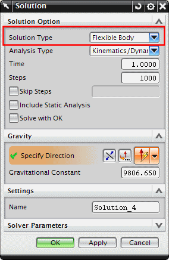

在运动仿真中，创建一个柔性体类型的运动学/动力学解算方案。
当求解柔性体解算方案时，RecurDyn 求解器将计算柔性体连接到机构剩余部分各个点处的物理变形，作为机构运动的配置点，并将这些变形保存在一个模态变形文件(.mdf)中。
使用.mdf 文件时，运动解算过程将调用 NX Nastran 求解器来恢复变形、位移、应力以及其它原始的、未减少的柔性体结果，然后这些暂态结果将返回到运动仿真中，在那里您可以查看机构的运动。

默认情况下，查看柔性体解算方案动画时，将显示柔性体的平移变形结果(节点位移)。您也可以显示其它结果，比如位移 – 节点的和应力 – 单元节点，这取决于您在高级仿真的 SOL 103 柔性体解算方案输出要求中请求的结果。